Autumn Cafe
Admittedly, this project was just for fun, but I couldn't help adding it to my portfolio. I designed this custom LEGO set digitally in LEGO Digital Designer first, then bought every piece from sellers on BrickLink and hoped the physical set would come together the way the blueprint promised. It did.
I had a blast designing the set, tracking down the parts, and watching the physical build come together exactly as I'd imagined it on screen. So much of what I do professionally lives entirely in the digital realm — it was a nice change of pace to work on something that ended with an actual object in my hands.
When I finished, I posted it to LEGO Ideas, and the LEGO community was incredibly kind and encouraging — the set even inspired a review on All Day Bricks. It's one of the best communities on the internet. Thank you, LEGO friends.
It's early autumn. The air is brisk, the sky brightly overcast. Inside, patrons enjoy the warmth of a well-made cup of coffee while an afternoon quietly floats away in a coffee cup. The exterior includes benches, trees, a bicycle parked out back, and a custom sticker displaying the café's name over both doors. The interior is fully detailed — espresso maker, blender, bar, sink, cash register, a newspaper stand, and a shelving unit of merchandise. The roof lifts off as a single piece for easy access to the interior.
Eight custom minifigures populate the café: a male and female barista, the café bum who spends too much time there reading newspapers, the college kid who should be studying instead of listening to music, a mother and daughter enjoying a treasured afternoon together, a grandmother on her morning routine, and the local songwriter the town loves hearing play outside.
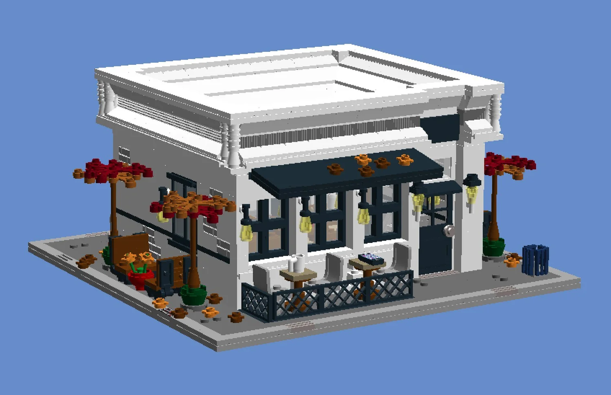
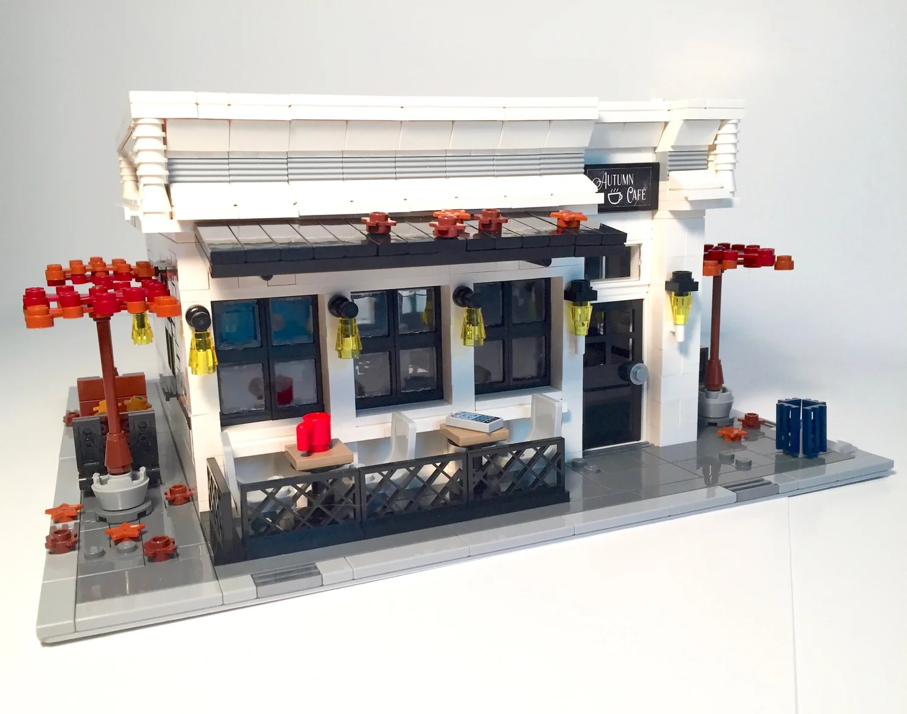
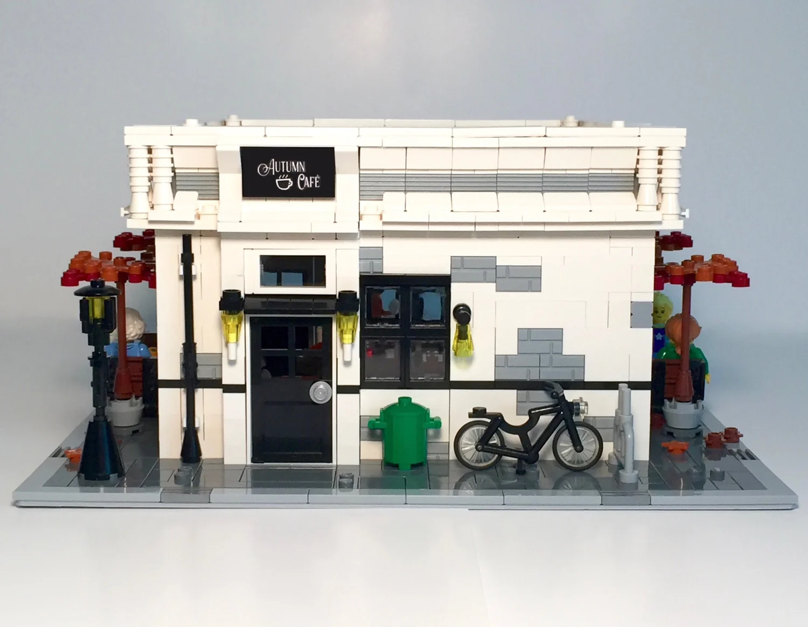
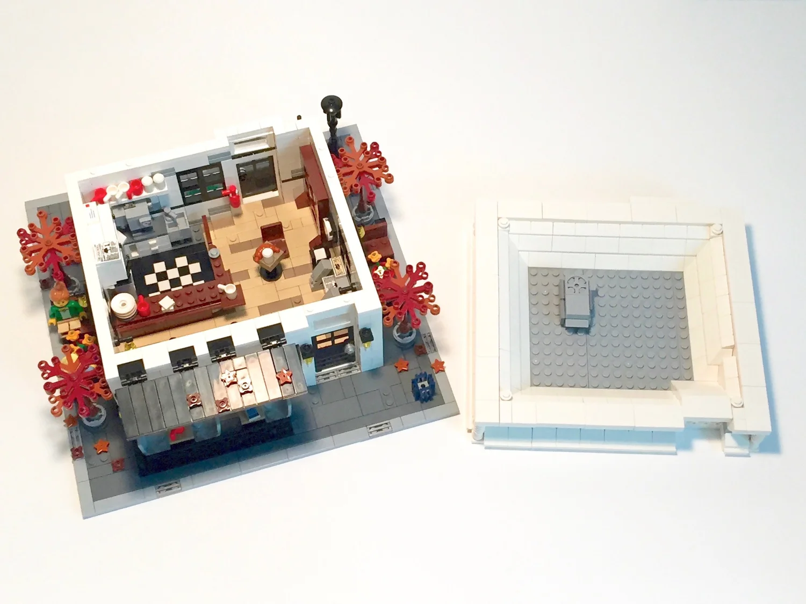
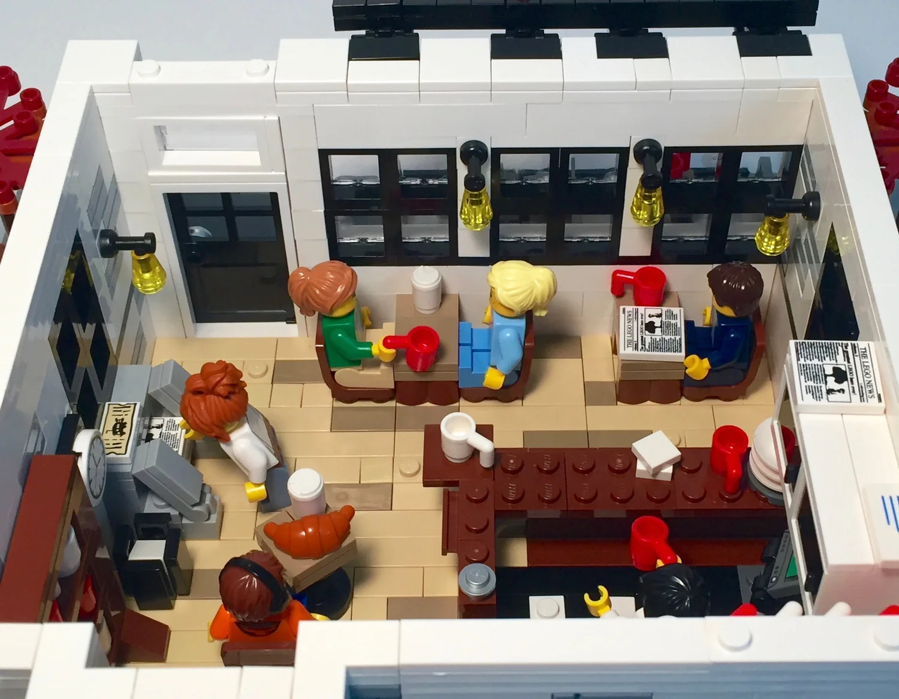
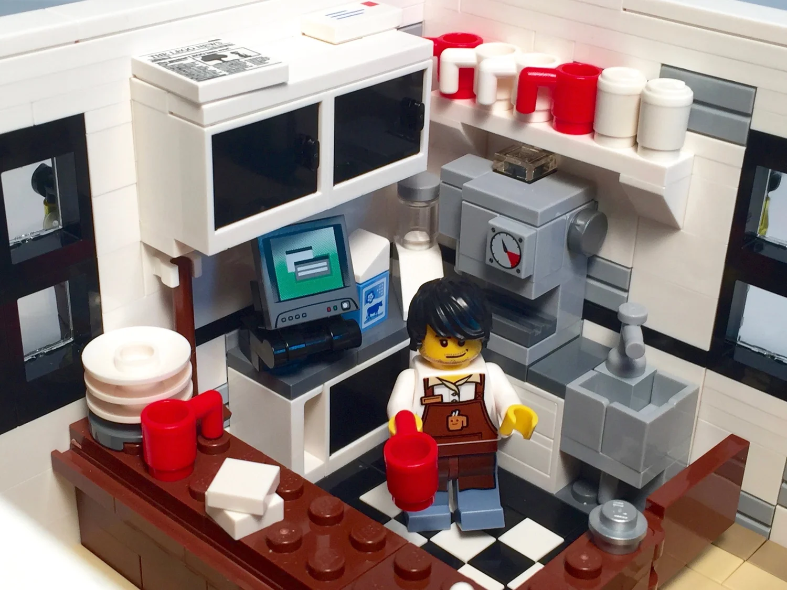
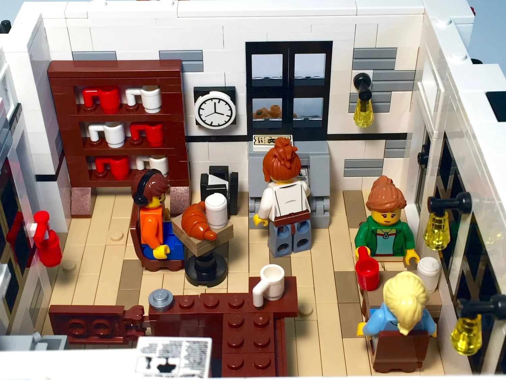
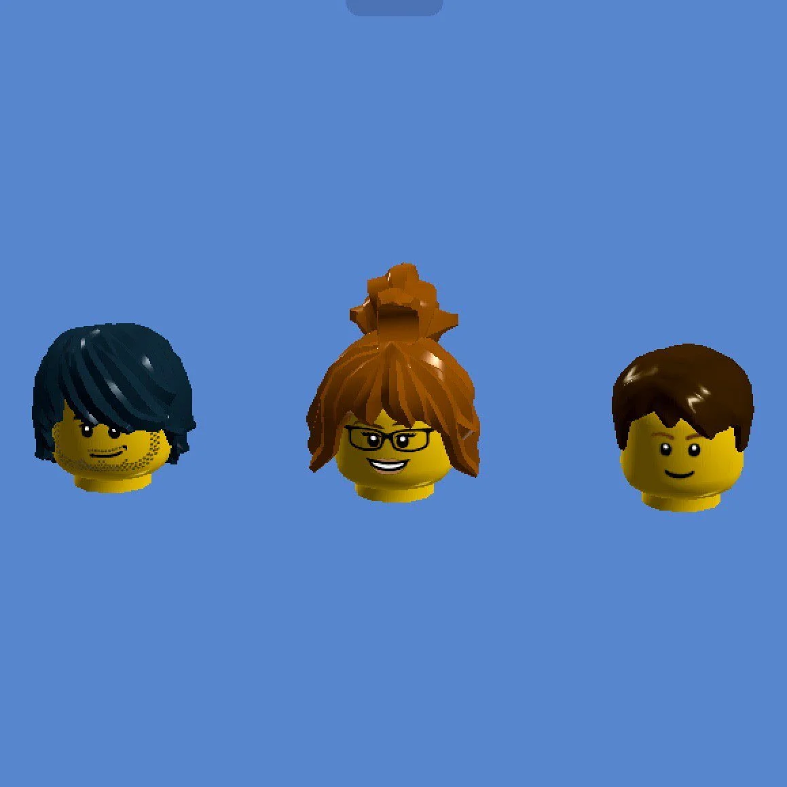
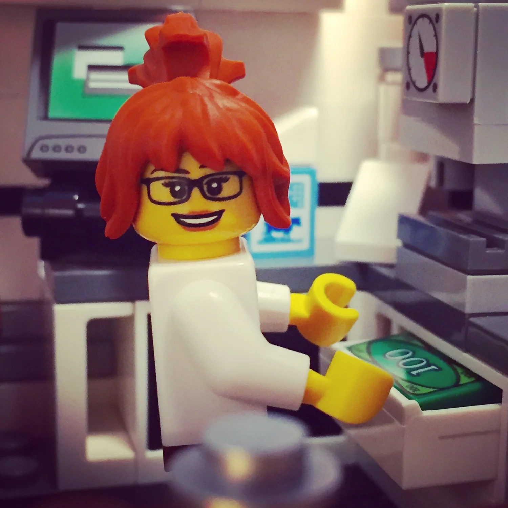
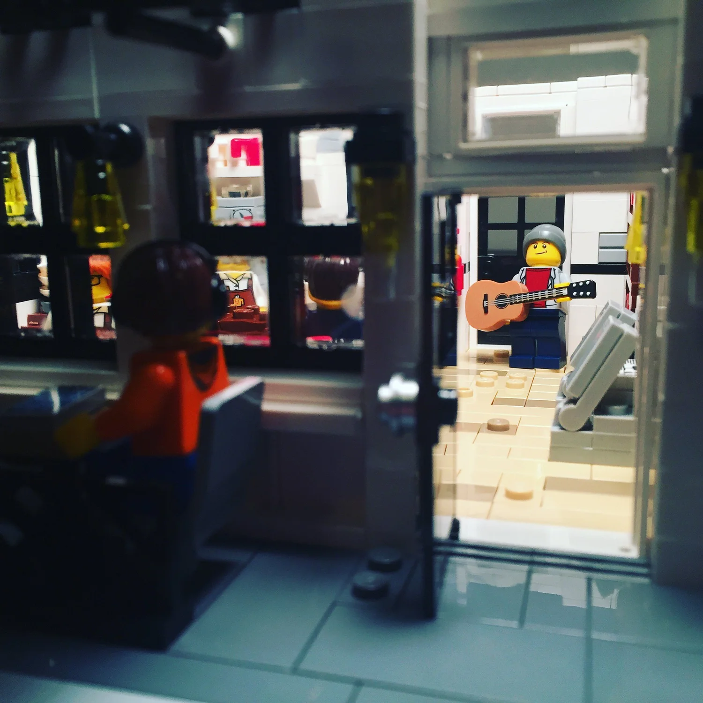
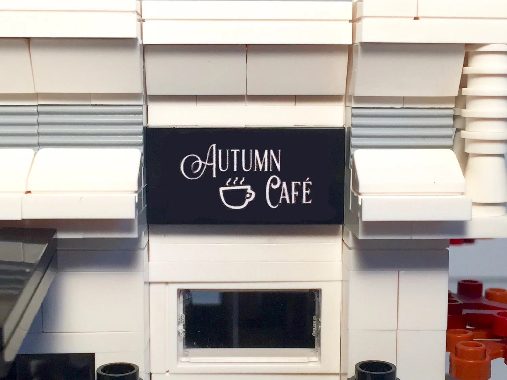
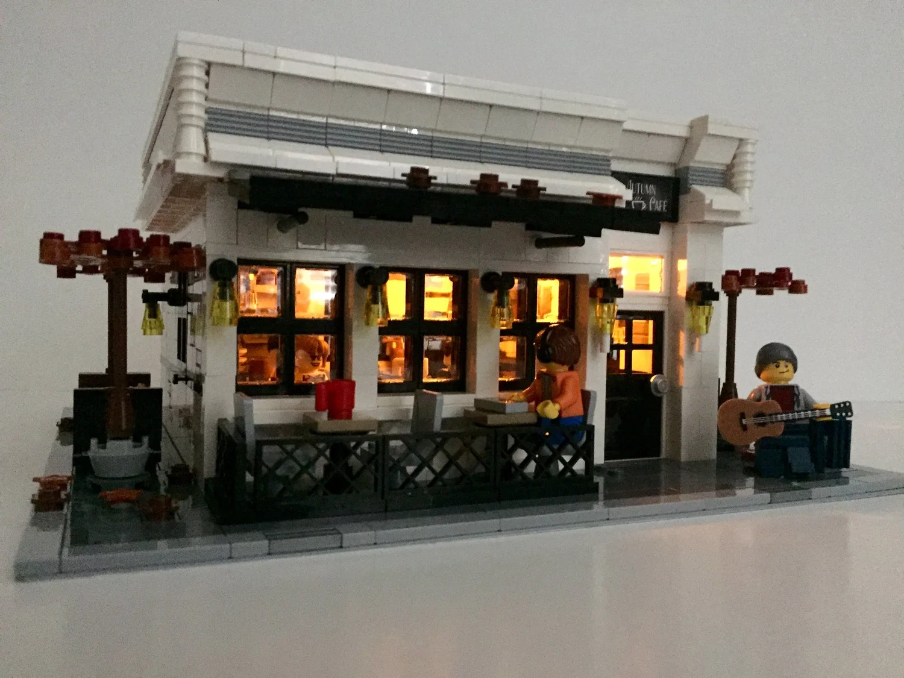